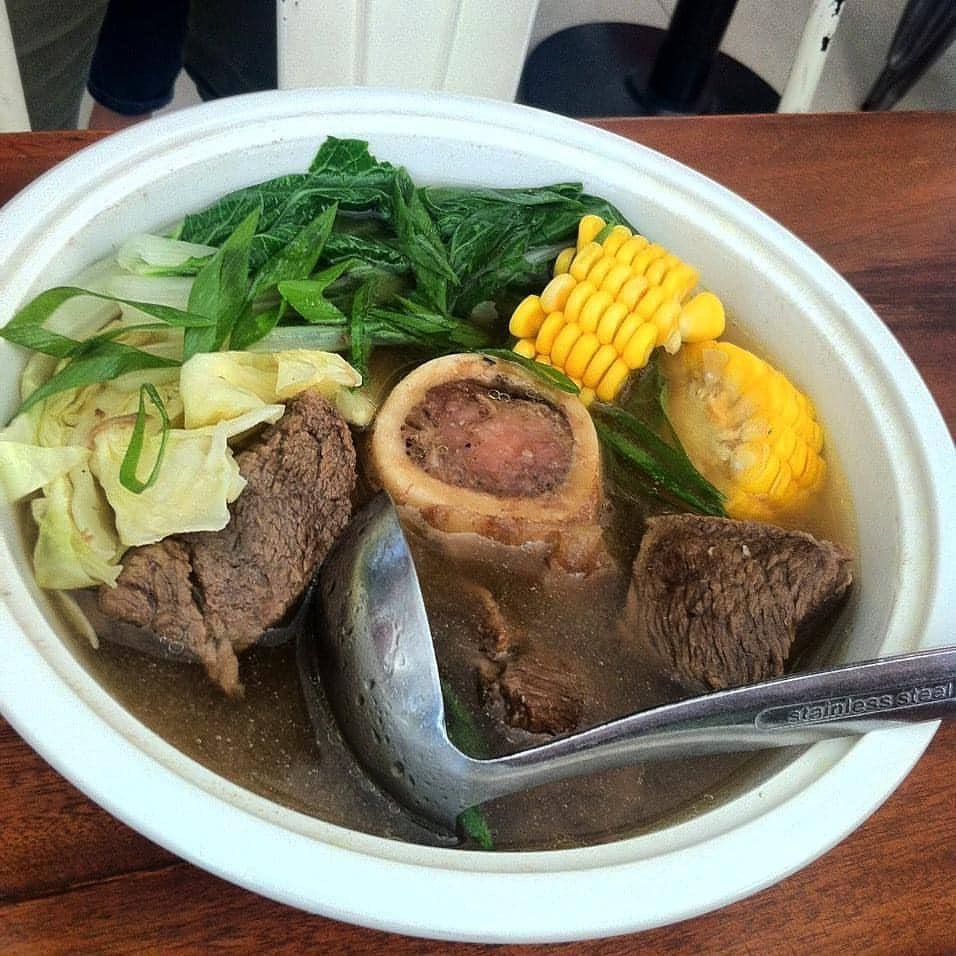

Bulalo

Bulalo Soup
Bulalo is a popular Filipino soup dish that is typically made with beef shank and bone marrow, along with various vegetables like corn on the cob, bok choy, and potatoes.
Ingredients:
- 2-3 lbs beef shank with bone marrow
- 1 onion, chopped
- 3-4 cloves garlic, minced
- 2-3 corn on the cob, cut into 2-3 inch pieces
- 2-3 potatoes, peeled and cut into chunks
- 1 bunch bok choy or pechay, chopped
- Salt and pepper, to taste
- Water, enough to cover the beef shank and vegetables
Instructions:
- In a large pot, add the beef shank and enough water to cover it. Bring to a boil and skim off any impurities that rise to the surface.
- Add the chopped onion and garlic to the pot, along with some salt and pepper to taste.
- Lower the heat to a simmer and let the beef shank cook for about 2-3 hours, or until the meat is tender and falls off the bone.
- Once the beef shank is cooked, remove it from the pot and set it aside. Strain the broth to remove any bits and pieces.
- Return the broth to the pot and add the corn on the cob and potatoes. Let the vegetables cook for about 10-15 minutes, or until they are tender.
- Add the bok choy or pechay to the pot and let it cook for another 2-3 minutes.
- Add the beef shank back to the pot and let it heat up again.
- Season with more salt and pepper to taste.
- Serve hot with steamed rice.
Back to main